Free Colony
“The 光能者 have invaded this colony, turning its citizens into 无票者 hordes. They have raised uncanny, malevolent monoliths that generate some kind of exotic 能量 fields. We know 两者都不 their 功能 nor their true nature—that is why we must 摧毁 them. We must cast off their occupation. Deploy to the colony, tear down the invaders' structures, and 升旗 of 超级地球 once more.
— 任务 Briefing
“The 光能者 have laid false claim to this city, besmirching our streets with more of their despotic monoliths. Deploy to the city, raze the enemy's totalitarian monuments, and 升旗 of 超级地球 to restore hope to our citizens.
— 任务 Briefing, city 任务
Free Colony ，或 解放城市 in the Metropolis 生物群系, is a 任务 in 绝地潜兵2. 绝地潜兵 are tasked with destroying an 光能者 Monolith, and asserting 超级地球's presence in the area by raising its flag.
目标 Steps
Much Like 传播民主 Missions, 绝地潜兵 must travel to a designated flag raising point and deploy the 超级地球 Flag 战略配备. However, there will almost always be an additional Monolith on the map that must be destroyed.
难度 1-5 will almost always have one Raise 超级地球 Flag 目标, and one 摧毁 Monolith.
升起超级地球旗帜
“这个位置经过精心选择，目的是最大限度地发挥旗帜鼓舞人心的力量。
— 目标 概述
“抗击丢弃我方旗帜的入侵者。高举管理式民主的不朽象征，以自由之名收复这座城市。
— 目标 概述, city 任务
简单难度 will have one raise flag 目标, 难度 6 and up will add an additional 目标.
- (If 绝地潜兵 are out of 射程) Move closer to 目标
- 绝地潜兵 must move closer to the 目标 位置.
- Use 战略配备: 超级地球旗帜
- 升起旗帜
- 绝地潜兵 must wait and defend the flag from constant 光能者 增援 the entire one minute and forty 秒 until the 目标 is 完成.
- Unlike flag raising 目标 on other fronts, 绝地潜兵 do not have to clear the area once the flag is fully raised.
摧毁巨石
“Strange 光能者 monoliths seem to be creating fields of 负面 能量. We do not understand their 目的 of their true nature. That is why they must be destroyed.
— 目标 概述
“Grotesque Monoliths now pepper this city, boldly empowering the 光能者 through 未知 means. Their inscrutability is an affront to Liberty. They must be destroyed
— 目标 概述, city 任务
One 摧毁 Monolith 目标 will appear on 每次任务, regardless of 难度.
the Monolith can only be destroyed by explosions with a 爆破 force of 60. The intended way is with a NUX-223 Hellbomb, it can be cleared with the B-100 Portable Hellbomb or the SEAF 大炮 Mini-Nuke.
各难度地图
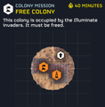
 简单 难度
简单 难度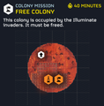
 容易 难度
容易 难度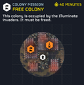
 中型 难度
中型 难度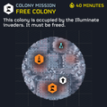
 挑战 难度
挑战 难度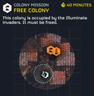
 困难 难度
困难 难度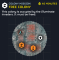
 极难 难度
极难 难度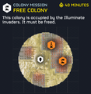
 自杀任务 难度
自杀任务 难度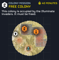
 不可能 难度
不可能 难度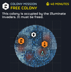
 绝地潜兵难度 难度
绝地潜兵难度 难度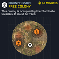
 超级绝地潜兵难度 难度
超级绝地潜兵难度 难度
变更历史
1.007.000
2026-08-12
Undocumented change
- 已更改 主要目标 layout based on 难度
1.002.001
2024-12-13
Added to the game.
媒体
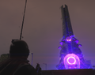
The Monolith as viewed from below.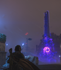
The Monolith as viewed from afar.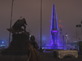
The Monolith as viewed from the side.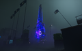
Angled View Of an Active Monolith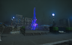
Monolith In a Park From Farther Away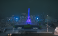
Monolith In a Park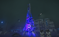
Clear View of the Writing on The Monolith.